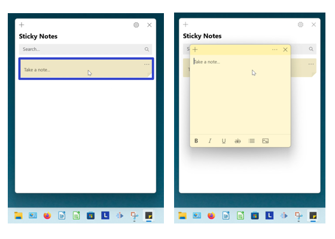

How to Open a Sticky Note in the Microsoft Sticky Notes App
This tutorial covers:
How to Open a Sticky Note:
No time to scroll down? Click through this presentation tutorial:
View a video tutorial:
How to Open a Sticky Note with Double Click
- Step 1: First open the Sticky Notes app. In the Notes List window, double click a sticky note to open it.
How to Open a Sticky Note With Hover
- Step 1: Open the Sticky Notes app. Go down to the taskbar and hover the mouse over the Sticky Notes app icon.

- Step 2: Two small windows appear; one is the Notes List and one is the sticky note. Click the sticky note window to open the sticky note.

How to Open a Sticky Note With Right Click
- Step 1: First open a sticky note. Type any text into the sticky note, and click anywhere in the Notes List.
- Step 2: In the Notes List, right click the sticky note.
- Step 3: In the menu that opens, click “Open note” to open the sticky note.

How to Open a Sticky Note From the Notes List
- Step 1: Open a sticky note. Type any text into the sticky note and cilck anywhere inside the Notes List.
- Step 2: On the far right side of a sticky note, click the “Menu” or “…” button.

- Step 3: In the menu that opens, click “Open note” to open the sticky note.

Refer to these instructions for later with this free PDF tutorial.